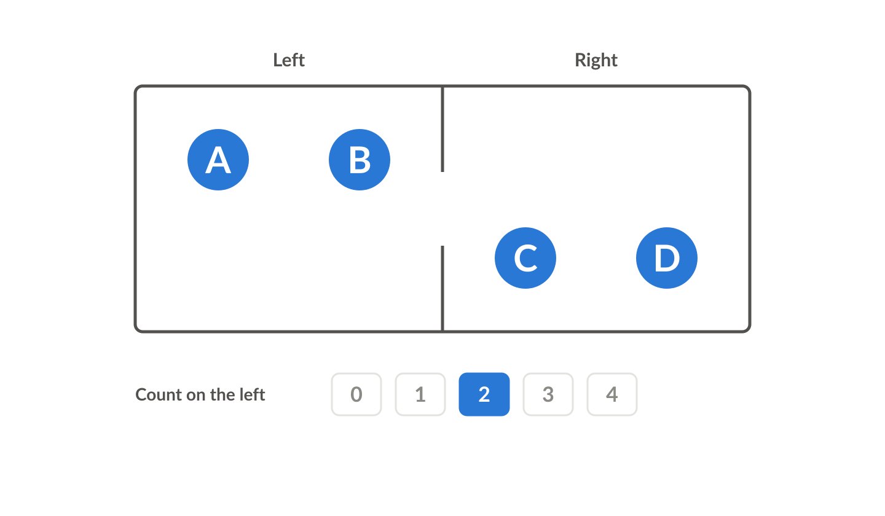
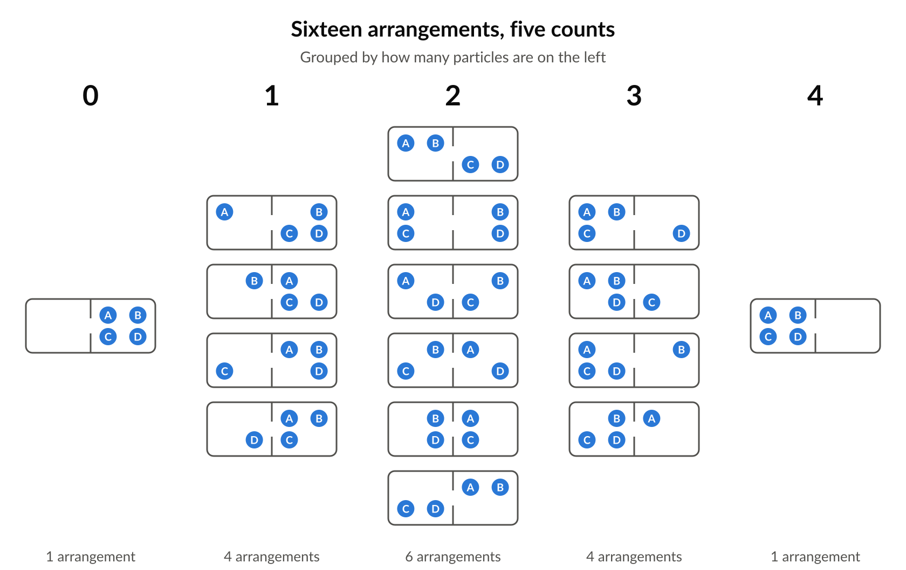
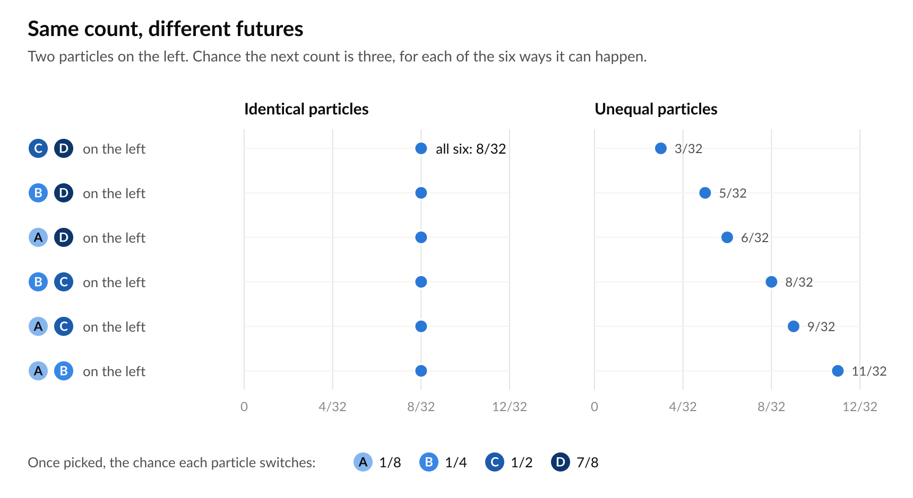
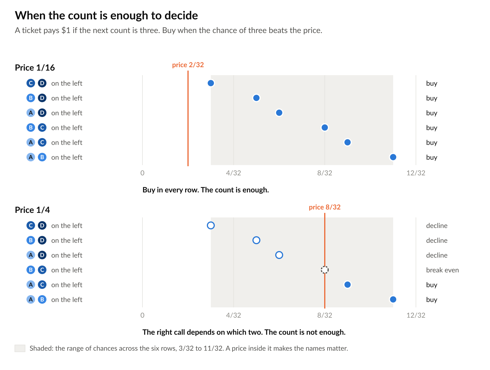
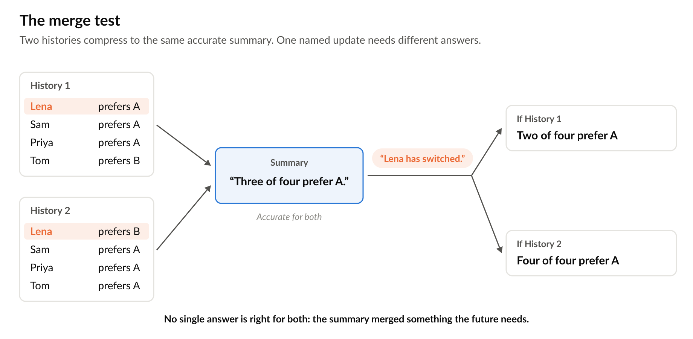

Every summary is a bet about the future.
A summary can be perfectly accurate about the past and still lose. The wager is about which questions come next, and whether the details it threw away will be needed to answer them.
Physics has an exact version of this bet. Every AI agent that compacts its own context to keep working is making an inexact one. The exact version shows what the inexact one is risking, and it suggests a test that a memory can run on itself.
Sixteen into five
Put four particles in two chambers. Call them A, B, C and D. At each step, pick one particle at random and flip a fair coin. Heads, it moves to the other chamber. Tails, it stays.

The full description records where each particle is. Four particles, two places each: sixteen arrangements.
Now forget the names. Keep only how many particles are on the left.
That number takes five values, zero through four. Sixteen states have collapsed into five. “A and B on the left” and “C and D on the left” are now the same state. We have thrown away something real.

Suppose two particles are on the left. The chance you pick one of them is one-half, and the chance the coin then moves it is one-half. So the count drops to one with probability one-quarter. By the same reasoning it rises to three with probability one-quarter. Otherwise it stays at two.
The names never entered the calculation.
In general, with z particles on the left, the count falls with probability z/8, rises with probability (4 − z)/8, and stays put half the time. Every arrangement with the same count gives the same odds for the next count. Because the rule applies again at every step, it fixes the odds of every future sequence of counts too.
Five states, no predictive loss for future counts. The coarse description runs on its own, without ever reopening the sixteen arrangements underneath.
Markov chain theory calls this lumpability, a term from Kemeny and Snell’s 1960 Finite Markov Chains: the detailed states lumped together agree on the odds of moving between lumps.
This is a four-particle instance of the Ehrenfest diffusion model, which Fernando Rosas and colleagues work through in their 2024 paper Software in the natural world, one of the clearest recent attempts to make emergence precise. Their question is when a higher level of description can stand on its own: when knowing everything underneath adds nothing to predicting what the higher level will do next. When it can, the higher level behaves like software, running on the physics without consulting it.
That is one kind of emergence you can actually check. A level of description that has earned the right to stop looking down.
True, and no longer enough
Now change one rule.
Keep picking particles at random, but give them different odds of switching once picked. A switches with probability 1/8. B with 1/4. C with 1/2. D with 7/8.
Same sixteen arrangements. Same five counts. But the particles are no longer interchangeable, and the count no longer runs on its own.
Take two arrangements with two particles on the left. In one, the left chamber holds C and D, the restless pair. In the other, A and B, the sluggish pair.
To reach three, a particle has to cross over from the right. With C and D on the left, the ones that can cross are the sluggish pair, A and B: each is picked with probability one-quarter and then switches with probability 1/8 or 1/4, so the chance is 1/32 + 2/32 = 3/32. With A and B on the left, the restless pair waits on the right, and the chance is 4/32 + 7/32 = 11/32. Same count, and the chance of reaching three differs by twenty-five percentage points between two states the summary calls identical.

The sentence “two particles are on the left” is still entirely true.
It has stopped being enough.
An abstraction can go stale without ever becoming false, and ordinary factual checks will not notice.
Named interventions
There is a second way to break the count, even with identical particles.
Go back to the original rule, where every particle switches with the same odds. Now add a new operation: move particle A.
If A is on the left, the count drops. If A is on the right, the count rises. The count alone cannot tell you which.
The random rule is unchanged. We have added an operation it never licensed us to predict. The five-state description was sufficient for updates that treat every particle alike. An update that singles one out needs to know where that particle is. Rosas and colleagues build the same condition into their theory: counterfactual guarantees require full observation or interventions that respect the modeled dynamics. Move particle A does not.
Every agent is a coarse-graining
Every long-running AI agent coarse-grains its own past. When the context window fills, it summarizes and keeps going. Memory systems do the same across sessions: compress the conversation, keep the gist, drop the rest. Each compaction is a lump. Each lump is a bet that the merged details will not matter.
Four reviewers are choosing between drafts A and B. Three prefer A; one prefers B. The assistant compacts the thread to a single line: “Three of four reviewers prefer A.”
Perfectly accurate. Then a new message arrives: “Lena has switched.”
If Lena was in the majority, support for A falls to two. If she was the holdout, it rises to four. The summary and the message are consistent with both. No amount of model intelligence recovers the answer, because the information is not there. A smarter model might explain the ambiguity beautifully. The ambiguity stays.
Change the message to “One reviewer switched from A to B” and the tally updates itself. The message carries its own effect.
This is move particle A in conversational form. An update that states its effect can ride on the summary. An update that depends on a discarded identity breaks it.
And conversation is full of the second kind. Lena switched. Use the other one. Go back to what Sam suggested. That number was wrong. So the compressions likely to fail are predictable: the ones that kept the aggregate and dropped the referent.
None of this transfers the exactness of the particle model to natural-language memory. A summary written in English has no transition matrix to check. What transfers is the shape of the failure, and with it a way to look for one.
What you can afford to forget
Before turning that into a test, one more particle example, because the test has to know when a lost distinction is harmless. Not every lost distinction costs something.
Back to the unequal particles. A risk-neutral player is offered a ticket that pays one dollar if, after the next step, three particles are on the left. It costs a quarter. Two are on the left now. Buy or decline?
It depends on which two. With A and B on the left, the ticket wins with probability 11/32, better than the 8/32 it costs. Buy. With C and D on the left, it wins with probability 3/32. Decline. Knowing only the count, you cannot make the right call in both cases.
Now drop the price to a sixteenth of a dollar. Work through all six ways to put two particles on the left, and the worst chance of reaching three is 3/32. That still beats 2/32. Buy, whichever two they are.
You can draw the line exactly. Across the six arrangements, the chance of reaching three runs from 3/32 to 11/32. Price the ticket below 3/32 or above 11/32 and the count tells you everything the decision needs. Forgetting the names costs nothing. Price it inside the band and the same forgetting can cost you the right choice.

So “afford to forget” is not a metaphor. Whether a lost distinction is expensive depends on the decision riding on it. A summary too coarse for an exact forecast can still determine the best action.
The idea has a pedigree. In 2009, Nicolas Brodu showed how a payoff function decides which distinctions between states matter, and called the resulting groups decisional states: in his words, the “emerging” patterns corresponding to the utility function. Reinforcement learning has a similar ladder of state abstractions, from those that preserve the whole model down to those that preserve only the best action. The cheap ticket sits on that bottom rung.
The other extreme makes the point from the opposite side. Label every arrangement “system.” That description predicts its own next state perfectly: it will be “system.” It has bought complete self-sufficiency by forgetting everything anyone could want to know.
Put the ticket beside move particle A and sufficiency stops being a property of a description alone. It belongs to three things together: the description, the updates it has to absorb and the decisions it has to support.
The merge test
Put the pieces together and you get a test for agent memory that does not depend on whether a summary is accurate.
Start by saying what the summary has to support without reopening the source. Then take two different histories that compress to the same summary, and hand both the same next message. If no single response is right in both histories, the summary has merged something the future needs. Different forecasts are not enough to fail it. The cheap ticket already showed that two histories can disagree about the odds and still agree about what to do.

Run it against the updates your system actually receives, the corrections and reversals and references back, not just against recall questions about the past. A summary can ace every recall question you thought to ask and fail on the first “no, the other one.” And run each conversation forward a few turns: two histories that agree on the next reply can still part ways later.
Be clear about what the test can and cannot do. One collision proves a summary insufficient for that task. A clean run supports sufficiency only for the updates you tried. That asymmetry is the useful part: collisions are cheap to construct, and each one points at what was lost. If the system can retrieve, test the next step too. Does the update trigger the lookup, and does the lookup find what the task needs?
The test also points at the repair. In the reviewer case, the missing distinction is each reviewer’s vote. Keep that small table and the summary survives any named switch, not just Lena’s. Where the referents cannot be predicted, keep the source and let the agent go back for it. Or ask for updates that state their own effect. Each repair puts the information somewhere different, and which one is worth paying for is the ticket question again: how often the update comes, what a wrong answer costs, how cheap the lookup is. What fails is keeping the summary as it was and hoping.
A memory can go out of date in two ways. The world can change, making the summary false. Or the work can change, making it insufficient: the details it had good reason to drop are suddenly the ones the next step needs. The first kind of staleness shows up when you check the facts. The second does not show up until you try to keep going.
What a memory should dream about
Memory systems increasingly do their upkeep offline. Between sessions, they reread old transcripts, merge duplicate notes and fix what has drifted. Anthropic writes that this process is often called dreaming. In one of its examples, Claude checks a note against the original transcript, catches an error and rewrites it.
That catches the first kind of staleness, a note that contradicts the record. It does not catch the second: “three of four reviewers prefer A” passes any factual check, because it is true. So here is a proposal, not yet a measured result: give the night’s work a second question. Replay the kinds of update the memory’s conversations actually bring, and ask the merge question of each.
The probes do not have to be invented from nothing. Take the corrections that actually arrived later in recorded conversations, add hypothetical ones about the people and things the source mentions, and ask whether one response would be right for every history consistent with what the memory kept.
For the reviewers, such a pass would find on its own the repair the merge test found by hand. “Lena has switched” collides, so the pass would keep the four-line table of votes, and nothing else. The thread’s wording, the order of the messages, who said what about the font: no update the pass tried could tell those histories apart, so they would stay forgotten. It could merge in the other direction too. Two notes that record Lena’s vote in different words would become one.
Split where an update collides. Merge where none does. When a new kind of update starts arriving, reopen the summaries it touches.
That gives dreaming a measure other than tidiness. The question in the morning is not whether the notes are cleaner. It is whether the next correction lands, and how little had to be reopened to land it.
Stop looking, look again
None of this is an argument against forgetting. Forgetting is the point. The five-state description earns its place because we can work with it instead of sixteen arrangements, and a memory that kept everything in view would not be a memory. It would be the archive.
The answer is a division of labor. The assistant works from “three of four prefer A,” with a note that any named change means checking the votes. Behind it sits the four-line table its last dream decided to keep, and behind that the thread itself. When “Lena has switched” arrives, the summary does not guess. It looks down one level, finds her vote, and updates.
A higher-level description earns its independence for the work it can do without consulting the details beneath it. That independence is what emergence buys. When the work changes, it has to be earned again.
A good abstraction lets you stop looking.
A good memory knows when to look again.